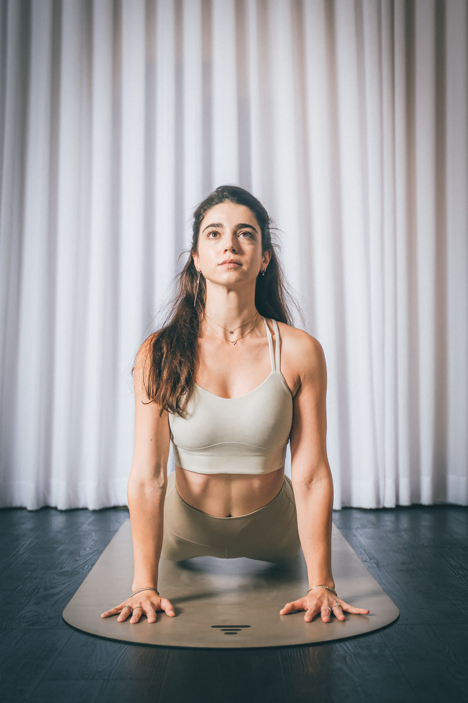

לא צריך רקע בבלט, לא צריך גמישות ולא צריך כושר קודם. את מגיעה חמש-עשר דקות לפני, בטייץ ובגופייה שלא מתהפכת, יחפה או בגרביים עם סוליית סיליקון. הציוד כבר מחכה בחלל — משקולות קטנות, גומיות, כדור ומזרן.
השיעור נמשך כשעה ובנוי תמיד באותו סדר: חימום, עבודה עם משקולות, החלק המרכזי ליד הבר, מזרן וליבה, ומתיחות בסוף. קשה, אבל בלי קפיצות ובלי משקלים כבדים — התנועות קטנות וחוזרות על עצמן, ובדיוק זה מה ששורף.
רגע — מה זה הבר הזה בכלל
מוט אופקי שמחובר לקיר. אותו מוט שמלווה שיעורי בלט, רק שאצלנו לא רוקדים עליו.
הבר הוא נקודת אחיזה. הוא מייצב אותך כדי שתוכלי לעבוד על רגל אחת, לרדת נמוך ולהחזיק תנוחה בלי לאבד שיווי משקל — וזה מה שמאפשר לשרירים הקטנים לעבוד קשה בלי להעמיס על הברכיים ועל הגב.
חוץ מהבר עצמו, זה כל מה שתפגשי בשיעור:
- משקולות קטנות — המשקל לא הולך לעלות משיעור לשיעור. מספר החזרות הוא זה שעושה את העבודה.
- גומיות התנגדות — נכנסות בעיקר בעבודת הישבן ופנים הירכיים על המזרן.
- כדור — נלחץ בין הברכיים או תומך מתחת לגב, ומכריח את הליבה להישאר דלוקה.
- מזרן — לחלק האחרון של השיעור ולמתיחות.
אין מכשיר שצריך ללמוד להפעיל.
וזה ההבדל הגדול מול פילאטיס מכשירים, שם כל מתאמנת עובדת על מיטת רפורמר עם קפיצים ורצועות. בבר את עומדת על הרצפה, אוחזת בבר, ומתחילה. אם את מתלבטת בין השניים, כתבנו השוואה מלאה ביניהם.

איך נראה שיעור בר
מהרגע שנכנסת
| מתי | מה קורה |
|---|---|
| 5–10 דקות לפני | את מגיעה, משאירה נעליים ותיק, ותופסת מקום ליד הבר. זה הרגע לספר למדריכה שזה השיעור הראשון שלך, ואם יש כאב גב, ברך או משהו אחר שכדאי שתדע. |
| 0–8 דקות · חימום | תנועה קלה על המזרן, חיבור לנשימה, פתיחה של הכתפיים ושל האגן. כאן את גם שומעת מהמדריכה על מה השיעור הולך להתמקד. |
| 8–20 דקות · פלג גוף עליון | משקולות קטנות בתנועות איטיות לכתפיים, לגב ולזרועות. המשקל קטן — מספר החזרות הוא זה שעושה את העבודה. |
| 20–40 דקות · ליד הבר | החלק שכולן מדברות עליו. עמידה ליד הבר, עקבים מורמים, ירידות קטנות, החזקות ופולסים לרגליים ולישבן. כאן מבינים למה השרירים רועדים. |
| 40–52 דקות · מזרן וליבה | גומיות, כדור ומשקל גוף. עבודה על הבטן, על שרירי הגב התחתון ועל הישבן, בשכיבה ובעמידת ארבע. |
| 52–60 דקות · מתיחות | שחרור של מה שעבד, נשימה, וירידה בהדרגה לדופק רגוע. |
זה המבנה הקבוע של השיעור. התרגילים עצמם משתנים בין מדריכות ובין שיעורים, ואצלנו יש גם דגשים שונים — פילאטיס-בר, כוח-בר וריקוד-בר. הסוג של כל שיעור מופיע בלוח השיעורים.
ככה נראה שיעור בר
מה ללבוש ומה להביא
ומה לא: נעליים, תכשיטים גדולים שיתנדנדו, ושעון או צמיד שיכה בבר בכל פעם שתאחזי בו. שיער אסוף עוזר, במיוחד בחלק של המזרן.
ארבעה דברים שמרתיעים לפני שיעור בר ראשון
"אף פעם לא רקדתי בלט"
גם רוב הנשים בשיעור לא. השם מגיע מהבר, לא מהריקוד — ואין בשיעור תרגיל שדורש רקע בבלט או מונח שצריך לדעת מראש. המדריכה אומרת את השם ומיד מראה, וגם זה מתיישב אחרי שיעור אחד.
"כולן יידעו את התרגילים ואני אתבלבל"
בשיעור בר כולן מסתכלות למראה או על המדריכה, לא עלייך. ובגלל שהתנועות קטנות וחוזרות על עצמן, גם מי שמפספסת את ההתחלה נכנסת לקצב תוך חצי דקה. היחידה שבאמת מסתכלת עלייך היא המדריכה, ובקבוצה של עד 15 היא מספיקה להגיע לכל אחת.
"אני לא בכושר ולא גמישה"
אין רמת כניסה לשיעור. המשקולות קטנות, אין קפיצות ואין ריצה, ולכל תנועה יש וריאציה קלה יותר — טווח קטן יותר, יד על הבר, או גרסה על המזרן. גמישות היא לא תנאי כניסה, היא אחד הדברים שמשתפרים.
"יש לי כאב גב או ברך"
שיעור בר לא כולל קפיצות, ריצה או נחיתות, ולכן הוא נחשב שקט יחסית למפרקים. אבל זה לא תחליף לבדיקה. אם יש לך פציעה פעילה, כאב מתמשך או הגבלה שקיבלת מרופאה או מפיזיותרפיסטית — דברי איתנו לפני השיעור, ונתאים. אנחנו לא נותנות ייעוץ רפואי.
"זה השיעור הראשון שלי, ויש לי X." שתי שניות, והמדריכה כבר יודעת מה לתת לך ומה לא. עדיף לפני השיעור מאשר תיקון באמצע תרגיל.
ואחרי השיעור הראשון?
בסוף השיעור הרגליים בדרך כלל רועדות. זו התגובה הרגילה של שריר שעבד הרבה חזרות ברצף, והיא עוברת תוך דקות אחרי שמפסיקים.
למחרת ואפילו יומיים אחרי אפשר להרגיש כאב שרירים — בעיקר בישבן, בירך הפנימית ובבטן. אחרי שניים-שלושה שיעורים הגוף מתרגל והכאב מתמתן.
מתי לחזור: פעמיים בשבוע זה הקצב שרוב המתאמנות שלנו מתייצבות עליו. פעם בשבוע מספיקה כדי להרגיש את האימון ולשמור על רצף. עדיף להתחיל בקצב שאת בטוחה שתעמדי בו ולהעלות אחר כך, מאשר להתחיל בשלוש ולהיעלם אחרי שבועיים.
מתאמנות מספרות לנו בעיקר על שני דברים אחרי כמה שבועות: הן עומדות זקוף יותר, והמדרגות והתיקים הכבדים נהיים קלים יותר. אנחנו לא מבטיחות מספרים ולא נאמר לך תוך כמה זמן תראי שינוי במראה — זה תלוי בהמון דברים שלא קורים בשיעור עצמו.
ואם בא לך לשלב: אימוני כוח בחדר הכושר נותנים את הבסיס שבר לא בנוי לתת, ופילאטיס מכשירים מוסיף עבודה על יציבה ושליטה. אותו מסלול, אותו סטודיו.
מתי יש שיעורי בר
מערכת השעות הקבועה של שיעורי הבר בחלל MOVE בסטודיו סטפס, קניון פולג נתניה — 17 שיעורי בר למבוגרות בשבוע, בימים ראשון עד שישי, כל שיעור שעה. בנוסף מתקיים שיעור בר לנערות בימי ראשון ב-16:00. בשבת אין שיעורי בר קבועים — שיעור מוצ״ש מתפרסם במערכת השעות בלבד.
הלוח הזה הוא המבנה הקבוע של השבוע. השעות המדויקות והמדריכה של כל שיעור מתעדכנות חי בלוח שיעורי הבר, ושם גם נרשמים.
שאלות שמתחילות
שואלות אותנו
עוד על אימוני בר
עוד בסטפס: חדר כושר לנשים · פילאטיס מכשירים · כושר לילדים ולנוער · ליווי תזונה
השיעור הראשון
הוא תמיד הקשה ביותר.
רק בגלל שהוא הראשון. אימון היכרות בבר ב-50 ₪, בלי התחייבות ובלי שיחת מכירה אחריו.
ההרשמה נפתחת במערכת של Arbox · לוח שיעורי הבר · או התקשרי 052-792-7575
המחירים כוללים מע״מ · ללא התחייבות · ביטול מנוי בהתראה של 30 יום מראש · ביטול שיעור עד 24 שעות לפני — ניתן לקבוע מועד חלופי. המדיניות המלאה